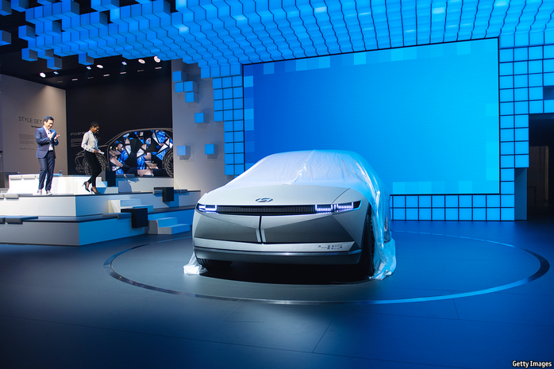

2021-01-26T14:50:16+00:00
汽车制造商和科技巨头
钢与硅
随着汽车走向电气化和电子化，底特律让位于虚拟的拉斯维加斯
一年一度的拉斯维加斯消费电子展（CES）上曾经满是各种可以放在口袋里或挂在墙上的小玩意。过去几年不再是这样了。随着汽车逐渐从一台机械工程设备演变为出行服务的数字平台，且车展的重要性也逐渐下降，汽车制造商已经在寻找新的渠道来展示自己的产品。在1月11日开幕的在线CES展上，它们再次加入智能手机、智能马桶和智能狗门制造商的队伍，展示自己最智能的技术。
CES地位提高是因为汽车在变化。零部件供应商博世（Bosch）在本次展览上指出，2010年一辆普通汽车有1000万行代码，现在是一亿行。本月，由于全球半导体供货短缺，福特在肯塔基州的一家工厂因为汽车所需芯片不足不得不停产一周。
运输电气化将加速车辆向电子设备的转变。电池动力需要一种新的电子架构，能够更好地集成硬件和软件，并改进联通性。汽车技术公司哈曼（Harman）构想了在家和办公室的两点一线上的“第三个生活空间”，利用这种技术发展来填补一个联网的空白段，并提供互动音乐会和游戏等新的车载服务。
但在其他方面，汽车仍然是个铁盒子。尽管电气化降低了进入汽车产业的门槛（资本密集型制造业曾经壁垒森严），但能生产出最优质汽车的仍是拥有大规模生产能力和可信赖品牌的公司。
结果就是汽车公司为了一件事大伤脑筋：那些运行汽车新电子功能的软件有多少该在内部开发，多少该外包给科技公司？戴姆勒在CES上展示了为其豪华电动车型设计的新型触屏仪表盘Hyperscreen。通用汽车的老板玛丽·博拉（Mary Barra）在展会的主题演讲中重申了这家底特律老牌汽车公司的电气化和电子化计划。去年秋天，通用汽车表示到2025年将在电动汽车上投资270亿美元，推出30款新车型。在CES开幕之前它推出了一个新logo，颜色改为天蓝色，让人联想到纯净的天空，其中的字母“M”看上去有点像个插头。展会期间，通用汽车发布了有关其电气化计划的更多内容，包括BrightDrop电动货车和新型电动凯迪拉克的详细信息（以及不出所料地，一款飞行概念车）。
而科技公司这一边正在琢磨移动硬件。苹果试探电动汽车领域体现了这种关系的复杂性。有关苹果打算制造电动汽车的传言最早出现在2014年。两年后，当其中的麻烦和支出变得明晰之后，苹果放弃了这个想法。1月7日有报道称它正与现代汽车商议生产一款苹果汽车，消息一出这家韩国汽车制造商的股价上涨了近20％。现代承认它正与苹果做初步探讨。苹果方面尚未作出回应。看起来，就在汽车制造商转向拉斯维加斯之时，科技巨头正朝着相反的方向走。
2021-01-26T14:50:16+00:00
Carmakers and big tech
Steel and silicon
Detroit loses out to virtual Vegas as cars go electric—and electronic
THE ANNUAL Consumer Electronics Show (CES) in Las Vegas used to be a jamboree for gadgets you can put in your pocket or hang on your wall. This hasn’t been true for a few years. As vehicles morph from a lump of mechanical engineering to a digital platform for mobility services, and motor shows wane in importance, carmakers have sought new venues to showcase their wares. At this year’s (virtual) CES, which opened on January 11th, they once again joined makers of smartphones, smart toilets and smart dog flaps in showcasing their smartest tech.
CES has risen in significance because vehicles are changing. Bosch, a parts supplier, noted at the show that a typical car had 10m lines of code in 2010; today it has 100m. This month Ford had to idle a factory in Kentucky for a week owing to a global shortage of semiconductors that deprived it of the chips its cars run on.
Electrification of transport will speed up the transformation of vehicles into electronic devices. Battery power requires a new electronic architecture that will come with better integration of hardware and software, and improved connectivity. Harman, a car-tech firm, envisions a “third living space” between home and work, using the development to plug a connectivity gap and offer new in-car services, such as interactive concerts and gaming.
In other ways, though, cars remain a metal box. Although electrification has reduced barriers to entry in the car business—which were formidable for capital-intensive metal-bashing—vehicles are still best made by firms that can manufacture at scale and with a trusted brand.
As a result, car firms are wracking their brains over how much of the software that runs their vehicles’ new electronic functions they should develop in-house and how much to outsource to tech firms. At CES Daimler showed off Hyperscreen, a new touchscreen dashboard for its luxury electric models. Mary Barra, boss of GM, delivered a keynote speech reiterating the Detroit stalwart’s electric and electronic plans. In the autumn GM said it would invest $27bn in electric cars by 2025 and launch 30 new models. Ahead of CES it unveiled a new logo, repainted blue to evoke clean skies and with its “M” made to look a bit like a plug. During the event the firm made more announcements about its plans for electrification, including details about its BrightDrop electric delivery van and new electric Cadillacs (as well as, inevitably, a flying-car concept).
Tech firms, for their part, are mulling mobile hardware. Apple’s flirtation with electric cars exemplifies the complexities of the relationship. Rumours that it intended to make electric vehicles first surfaced in 2014. Two years later, when the trouble and expense became clear, it dropped the idea. On January 7th a news report of talks with Hyundai to build an Apple car sent the South Korean carmaker’s share price up by nearly 20%. Hyundai acknowledged it was in early discussions with the iPhone-maker. Apple has yet to comment. Just as carmakers look to Vegas, it seems, big tech is headed the other way.■
2021-01-26T14:50:16+00:00
汽車製造商和科技巨頭
鋼與硅
隨着汽車走向電氣化和電子化，底特律讓位於虛擬的拉斯維加斯
一年一度的拉斯維加斯消費電子展（CES）上曾經滿是各種可以放在口袋裡或掛在牆上的小玩意。過去幾年不再是這樣了。隨着汽車逐漸從一台機械工程設備演變為出行服務的數字平台，且車展的重要性也逐漸下降，汽車製造商已經在尋找新的渠道來展示自己的產品。在1月11日開幕的在線CES展上，它們再次加入智能手機、智能馬桶和智能狗門製造商的隊伍，展示自己最智能的技術。
CES地位提高是因為汽車在變化。零部件供應商博世（Bosch）在本次展覽上指出，2010年一輛普通汽車有1000萬行代碼，現在是一億行。本月，由於全球半導體供貨短缺，福特在肯塔基州的一家工廠因為汽車所需芯片不足不得不停產一周。
運輸電氣化將加速車輛向電子設備的轉變。電池動力需要一種新的電子架構，能夠更好地集成硬件和軟件，並改進聯通性。汽車技術公司哈曼（Harman）構想了在家和辦公室的兩點一線上的“第三個生活空間”，利用這種技術發展來填補一個聯網的空白段，並提供互動音樂會和遊戲等新的車載服務。
但在其他方面，汽車仍然是個鐵盒子。儘管電氣化降低了進入汽車產業的門檻（資本密集型製造業曾經壁壘森嚴），但能生產出最優質汽車的仍是擁有大規模生產能力和可信賴品牌的公司。
結果就是汽車公司為了一件事大傷腦筋：那些運行汽車新電子功能的軟件有多少該在內部開發，多少該外包給科技公司？戴姆勒在CES上展示了為其豪華電動車型設計的新型觸屏儀錶盤Hyperscreen。通用汽車的老闆瑪麗·博拉（Mary Barra）在展會的主題演講中重申了這家底特律老牌汽車公司的電氣化和電子化計劃。去年秋天，通用汽車表示到2025年將在電動汽車上投資270億美元，推出30款新車型。在CES開幕之前它推出了一個新logo，顏色改為天藍色，讓人聯想到純凈的天空，其中的字母“M”看上去有點像個插頭。展會期間，通用汽車發布了有關其電氣化計劃的更多內容，包括BrightDrop電動貨車和新型電動凱迪拉克的詳細信息（以及不出所料地，一款飛行概念車）。
而科技公司這一邊正在琢磨移動硬件。蘋果試探電動汽車領域體現了這種關係的複雜性。有關蘋果打算製造電動汽車的傳言最早出現在2014年。兩年後，當其中的麻煩和支出變得明晰之後，蘋果放棄了這個想法。1月7日有報道稱它正與現代汽車商議生產一款蘋果汽車，消息一出這家韓國汽車製造商的股價上漲了近20％。現代承認它正與蘋果做初步探討。蘋果方面尚未作出回應。看起來，就在汽車製造商轉向拉斯維加斯之時，科技巨頭正朝着相反的方向走。